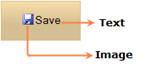

The Toggle-Button is a button that represents a setting with two states namely, ON and OFF. It allows the contents to be represented by an image, text, or an image with text.

Figure 293: Toggle-Button represented in an ON state

Figure 294: Toggle- Button represented in an OFF state
· Text – Displays the text on the Toggle-Button.
· Image - Displays the image or icon on the Toggle-Button.